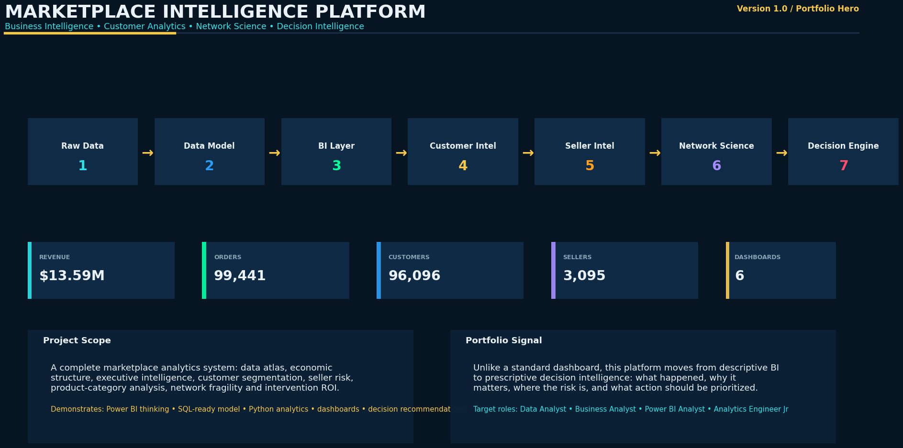
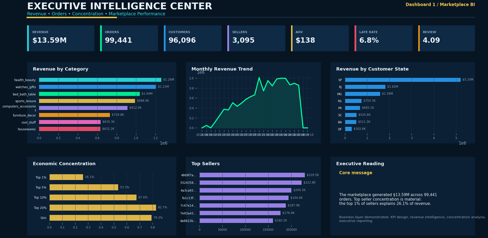
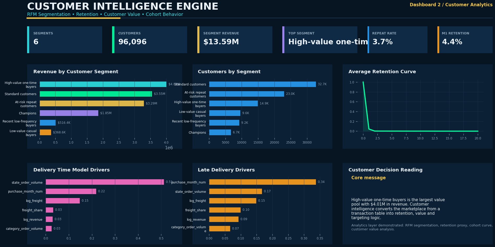
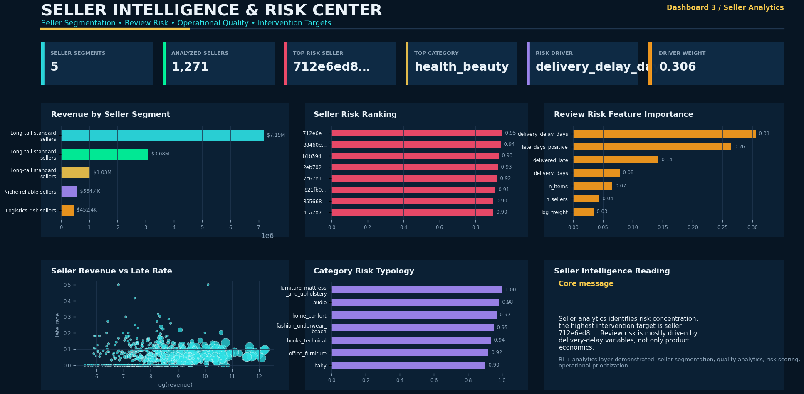
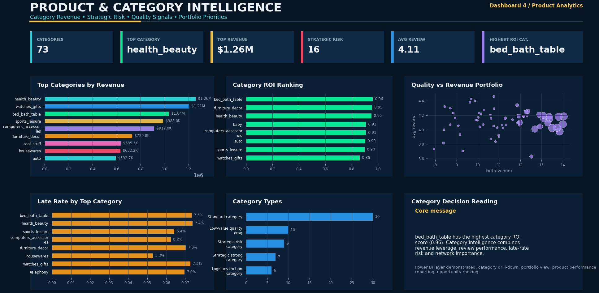
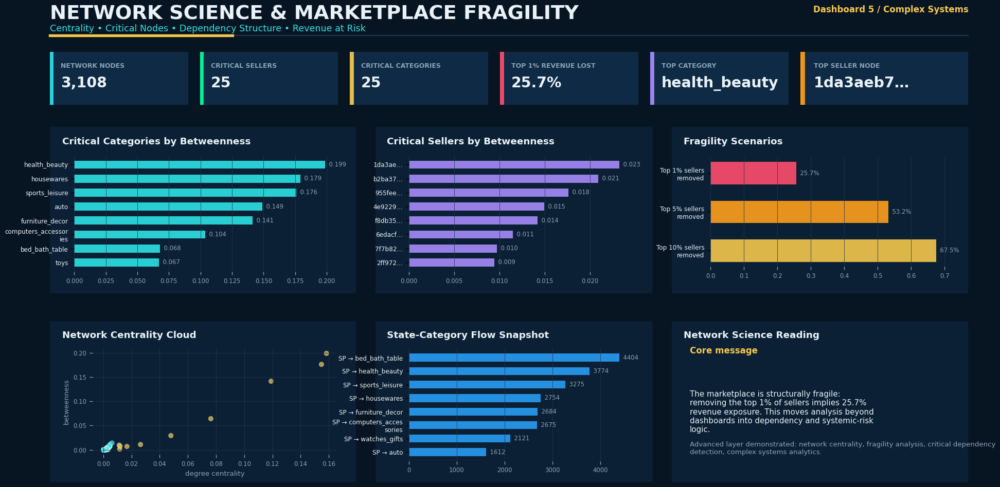
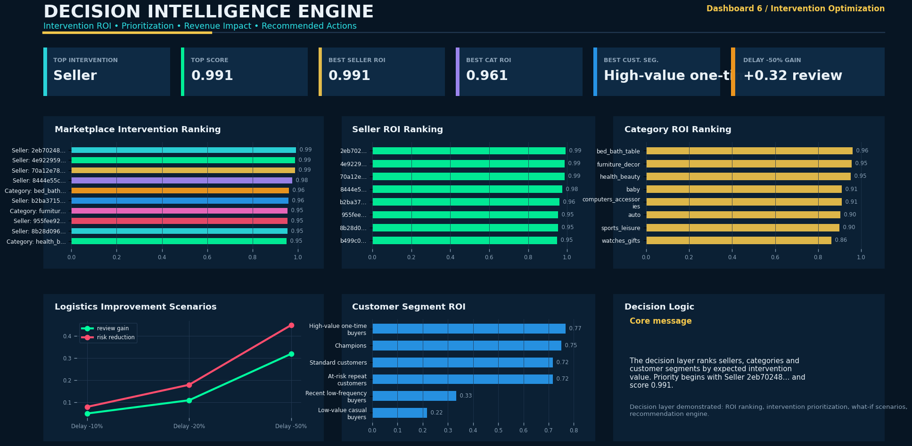

Generated from recovered Phase 0-5 Olist analytics outputs. These dashboards are designed as portfolio-ready visual evidence for Data Analyst, Business Analyst, Power BI Analyst and Analytics Engineer roles.






